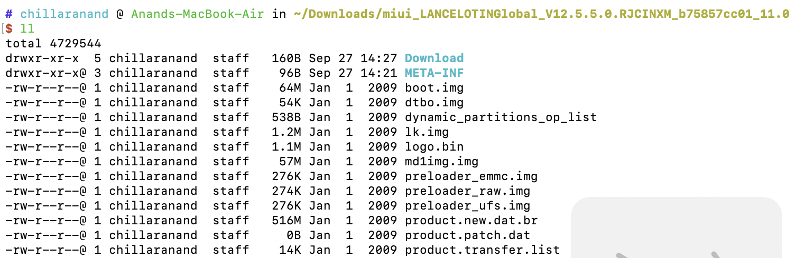
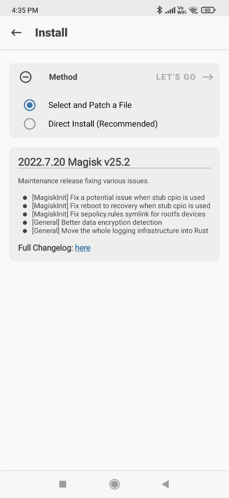

How To Root Xiamo Redmi 9 Prime Without TWRP
Introduction
Rooting1 an android device voids warranty but gives a great control over the device. For most of the popular devices, TWRP2 recovery is available. Once a device bootloader is unlocked, we can install TWRP recovery. After that we can flash Magisk to gain root access.
For some devices like Redmi 9 Prime(codename: lancelot), TWRP recovery is not available officially. There are couple of unofficial images but they are not working as expected and are causing bootloop.
In this article, lets see how to root lancelot device.
Rooting Lancelot
First ensure that the device bootloader is unlocked and your system has adb & fastboot installed. To root without TWRP, we need to obtain patched boot.img & vbmeta.img and flash them in fastboot mode.
First we need to download the stock ROM of the device to extract boot.img file. We can go to manufacturers site and download the same stock ROM3 that is running on the device. Once the ROM is downloaded, we can unzip it. There we can find boot.img file.

We need to patch this file. To patch this, download magisk app on the device. Click on install and select the boot.img file to patch. After a few minutes, it will generate a patched boot file.

We can download this file to system by running the following command.
$ adb pull -p /storage/emulated/0/Download/magisk_patched-25200_cU1ws.img .
Now we need to download patched vbmeta file. This is available in XDA4 forum. Click this link to download it.
Once we have both patched files, we can reboot the device in fastboot mode by using the following commands.
$ adb devices $ adb reboot bootloader
When the device is in fastboot mode, run the following commands to root it.
$ fastboot --disable-verity --disable-verification flash vbmeta vbmeta_redmi9.img $ fastboot flash boot magisk_patched-25200_cU1ws.img $ fastboot reboot
Once the deivce is rebooted, we can install root checker app and verify that the device is rooted successfully.
Final Thoughts
When we buy a Mac or PC(Linux/Windows), it is rooted by default. For Linux/Mac, we can run programs as sudo. For windows, we can just run a program as an administrator. There are no extra steps to root/jailbreak these devices.
But most mobile companies make rooting hard and only tech savy users can root the device. It would be great if mobile phones are rooted by default.

Chillar Anand
A blog about python, careers & life.
To contact me, send a message here.